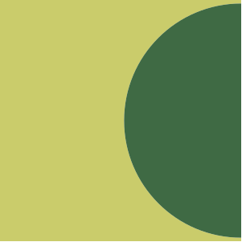
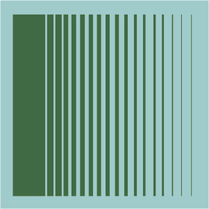
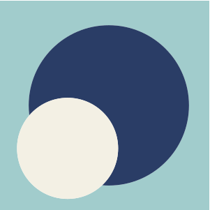

Pilar 1
Datos y decisiones
Gobernanza, calidad, integración y acceso confiable a la información para decidir con mayor velocidad y precisión.
DataFest reúne a quienes creen que los datos son mucho más que información: son una herramienta para tomar mejores decisiones, transformar negocios y crecer.
Los grandes desafíos de las empresas ya no se resuelven de manera aislada. La innovación aparece cuando organizaciones, especialistas y líderes comparten experiencias reales y distintas formas de abordar un mismo problema.
Por eso DataFest no es una conferencia técnica. Es una comunidad para aprender, inspirarse y conectar con quienes están cambiando la forma de trabajar con datos, con contenido de alto nivel y la energía de un festival.
Para las empresas que participan es también una oportunidad de mostrar lo que resolvieron y encontrar con quién resolver lo próximo, en un entorno profesional y distendido, sin discursos de venta.
No hace falta ser técnico. Los casos se cuentan desde el problema de negocio y el resultado, no desde la herramienta.
Mirás cómo otras empresas usan sus datos para decidir, sin tecnicismos.
Te llevás casos de operaciones, finanzas o comercial que podés aplicar con tu equipo.
Conocés pares y ves qué funciona cuando los datos llegan al negocio.
Nadie vende desde el escenario: cada charla recorre el mismo camino. Debajo de cada paso, el caso de agro del 30 de septiembre.
El desafío real que tenía la empresa.
Los datos del campo vivían en planillas y había que juntarlos a mano.

Qué información se usó y cómo se ordenó.
La información de todo el campo, integrada en un solo lugar.
Qué cambió en la forma de decidir.
Revisar rentabilidad y desvíos cada mañana, con el café.
Resultados y aprendizajes para llevarse.
Todo el campo en un solo tablero, sin ser una empresa “tecnológica”.
Además de las charlas, cada evento tiene tiempo para el networking: lo que más valoró la gente en el primer encuentro.
Ordenan el contenido de cada evento sin atarlo a una herramienta o a un proveedor.

Gobernanza, calidad, integración y acceso confiable a la información para decidir con mayor velocidad y precisión.
La evolución del BI, el autoservicio, la analítica aumentada y nuevas formas de interactuar con la información.

Casos concretos de asistentes, agentes y soluciones que mejoran productividad, servicio y capacidad de análisis.
Cómo reducir tareas manuales, errores, tiempos y fricción operativa conectando procesos y sistemas.
Adopción, cultura, prioridades, retorno y gestión del cambio para que la tecnología genere impacto real.
Problemas iniciales, decisiones tomadas, obstáculos, resultados y aprendizajes compartidos por las organizaciones.
Empresas del ecosistema de datos que ya trabajaban en temas parecidos decidieron juntarse. En vez de una charla técnica, tomaron el formato de los festivales de música y lo llevaron al mundo de los negocios.
WITDATA, Visión Fractal, ERA BT y MACH Consulting empiezan a reunirse para organizar algo juntos.
Nace DataFest como marca propia: nombre, colores, tipografías y formas.
Cinco charlas, casos reales y mucho networking en CABA.
IA para obtener datos donde no están accesibles: cinco casos, online y sin costo.